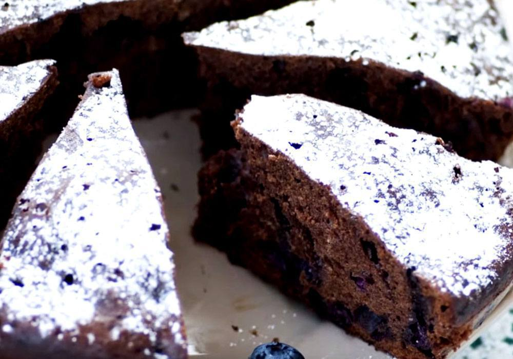

СОЛОДКІ РЕЦЕПТИ
 Макаруни простий рецепт
Макаруни простий рецепт
Це мигдальні печеньки, які настільки красиво виглядають, що здатні вже одним тільки своїм видом привести в захват абсолютно всіх.
Але, на смак макаруни такі ж неймовірні, особливі і оригінальні. Макаруни готують з мигдального борошна, яке не зовсім просто дістати
в звичайних супермаркетах, воно досить дороге, але побалувати себе чудовим десертом іноді можна. Існує думка, що справжні макаруни можуть
приготувати тільки досвідчені кондитери з великим досвідом, але не варто боятися, беріться за приготування цих чудових печеньок,
адже ми приберегли для вас простий рецепт макарунів, за яким вони обов'язково вийдуть з першого разу.
Млинці на Масляну
Масляна - це одне з найпопулярніших традиційних святкувань у наших краях, і незмінним атрибутом цих народних гулянь є млинці.
Існує просто неймовірна кількість рецептів приготування млинців на будь-який смак, у кожної господині є свої кулінарні секрети. Ми теж не залишаємося
осторонь і приготували для вас простий рецепт млинців на Масляну, за яким ви зможете по-швидкому спекти млинці, порадувавши своїх домочадців.
Млинці презентації не потребують – цю традиційну і просту в приготуванні випічку печуть кулінари по всьому світу.
Млинці презентації не потребують – цю традиційну і просту в приготуванні випічку печуть кулінари по всьому світу.
 Бісквітний торт з сирним кремом з фруктами
Бісквітний торт з сирним кремом з фруктами
Поєднання сирного крему з фруктами та ще на додачу з ніжним бісквітом - що ще смачніше можна придумати для торта. Адже це не просто смачно і апетитно, але ще і яскраво,
святково, ошатно. До того ж, готувати такі ласощі дуже просто і легко. Тому якщо вам необхідно спекти до свята смачний десерт, можу запропонувати приголомшливий і зовсім
нескладний варіант, як приготувати бісквітний торт з сирним кремом з фруктами. Хоча рецептів сирників чимало, думаю, що цей варіант вам сподобається, так як він просто
тане в роті, тому настійно рекомендую зупинити свій вибір на цьому варіанті.
Бісквіт в мультиварці простий
Незважаючи на те, що бісквіт вважається досить примхливою випічкою і в процесі його приготування присутня якась скрупульозність, багато господинь все ж вважають за краще його, обходячи інші десерти.
Але, в наш час все набагато простіше, якщо врахувати, що на допомогу сучасним господиням часто приходить новітня кухонна техніка, як наприклад, мультиварка. Відразу хочеться відзначити, що і сам процес
приготування і смак бісквіта істотно відрізняється від випічки бісквіта в духовці. Загалом, не будемо багато говорити, давайте просто спробуємо спекти бісквіт в мультиварці простий.